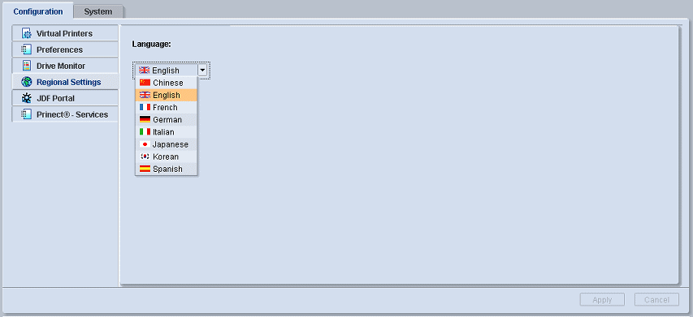

В «Региональных настройках» можно выбрать язык пользовательского интерфейса Printmanager.

Установите нужный язык в поле «Язык» и нажмите «Применить». Диалог показывает, что вы должны сначала выйти из Printmanager, прежде чем изменения могут быть применены. Подтвердите диалог «Да, остановитесь». Принтер-менеджер уходит. Когда Printmanager перезапускается, он отображается на выбранном вами языке.
Copyright © 2013 Heidelberger Druckmaschinen AG